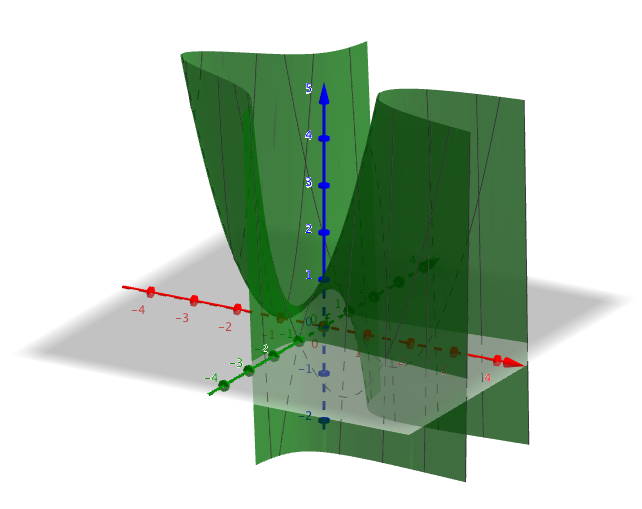
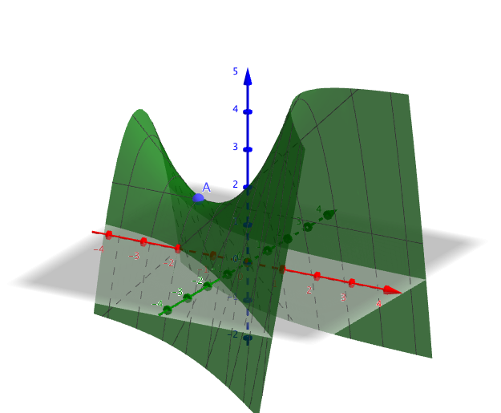
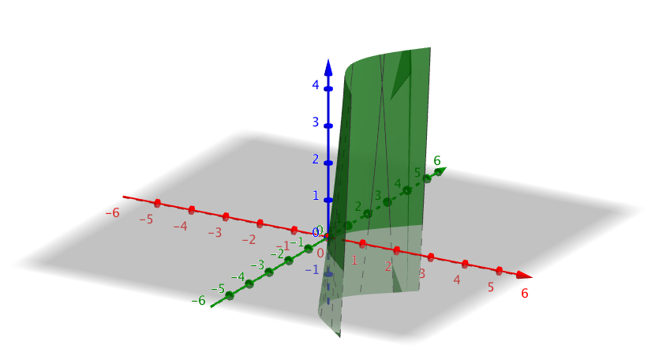
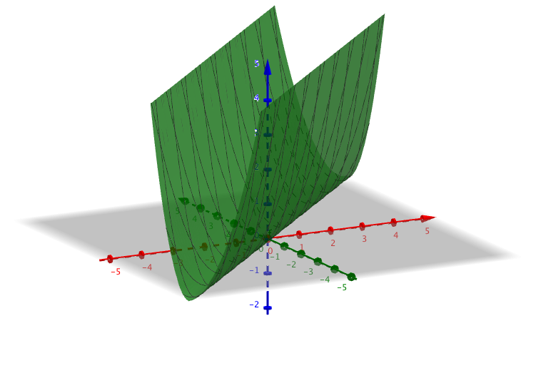
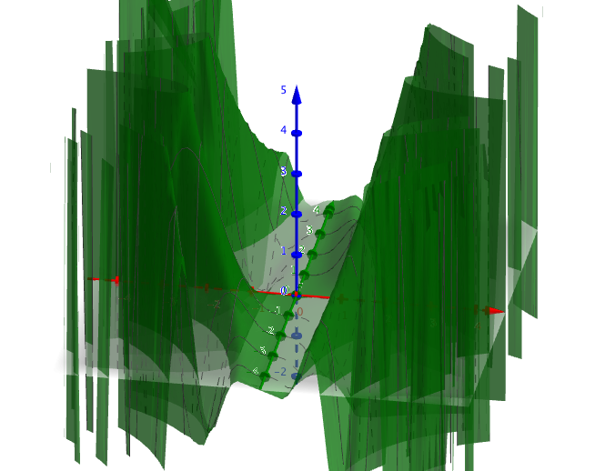
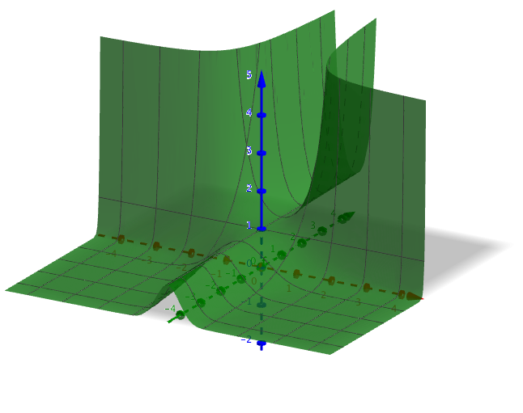
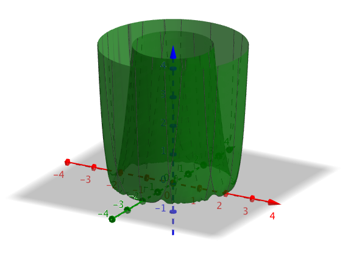
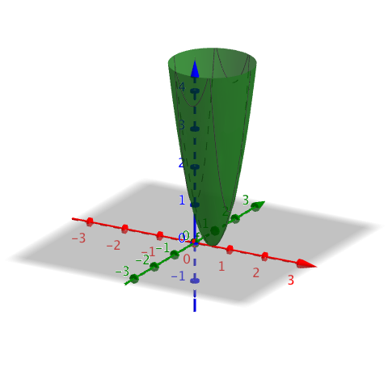

10. Partiell derivata
Hittils har vi undersökt funktioner i två dimensioner. Nu tar vi och lär oss undersöka funktioner i tre dimensioner. Vi börjar med att studera funktionen \( f(x,y) = x^2 - y^2 -4xy+2x +1 \).
Vi ritar upp den

Vi märker att vi har ett par punkter där funktionen byter rikting. För att komma åt dem bildar vi partiella derivator. Det betyder att vi deriverar med avseende på \( x \) och med avseende på \( y \) och sedan söker vi gemensamma nollställen för derivatorna.
Derivatan med avseende på \( x \) är \( \dfrac{\partial f}{\partial x} = -4y^2+2x+2 \).
Derivatan med avseende på \( y \) är \( \dfrac{\partial f}{\partial y} = -8xy -2y \).
För att hitta de punkterna där funktionen byter rikting, extremvärdena söker vi bägge partialderivators nollställen. Vi löser ekvationssystemet
\( \left\{ \begin{array}{l} -4y^2+2x+2 = 0 \\ -8xy -2y = 0 \\ \end{array} \right. \)
Ekvationssystemet har lösningarna \( (-1, 0 ), (-\dfrac{1}{4}, \dfrac{\sqrt{6}}{4}) , (-\dfrac{1}{4}, -\dfrac{\sqrt{6}}{4}) \).
De kritiska punkterna är utritade i följande bild.

Vi ser att i dessa punkter byter funktionen riktning eller är konstant.
Vill vi undersöka funktionens tillväxthastighet jobbar vi med gradientvektorn. Det gör vi i exempel 3.
Partialderivator använder vi oss då vi deriverar funktioner som har flera variabler. Några beteckningar är \( \dfrac{\partial f}{\partial x}, f'_x, D_x f \) och \( \partial_x f \).
Exempel 1 Bestäm de partiella derivatorna för funktionen \( f(x,y) = x-y^2 -xy +2 \).
Lösning
Vi deriverar med avseende på \( x \) och \( y \).
Derivatan med avseende på \( x \) är \( \dfrac{\partial f}{\partial x} = -y+1 \).
Derivatan med avseende på \( y \) är \( \dfrac{\partial f}{\partial y} = -x-2y \).
När vi jobbar med funktioner i två dimensioner talar vi om funktionens extremvärden. Då vi jobbar med funktioner i tre dimensioner så talar vi om kritiska punkter. De är punkter där funktionen har ett extremvärde eller en sadelpunkt.
Exempel 2 Bestäm de kritiska punkterna för \( f(x,y) = x-y^2 -xy +2 \).
Lösning
Funktionen ser ut som följande

Vi löser ekvationssystemet
\( \left\{ \begin{array}{l} -y+1 = 0 \\ -x-2y = 0 \\ \end{array} \right. \)
Ekvationssystemet har lösningen \( (-2, 1 ) \).
Vi har endast en kritisk punkt. Den är \( A = (-2, 1,1 ) \)
För funktioner i tre dimensioner talar vi inte om tillväxt hastighet utan vi talar om gradientvektor. Gradientvektorn för funktionen \( f(x,y) \) betstämmer vi som \[ \nabla f(x,y) = \partial_x f(x,y) \overline{i} + \partial_y f(x,y) \overline{j}. \]
Exempel 3 Låt \( f(x,y) = x-y^2 -xy +2 \). Bestäm den rikting från punkten \( (1, 2, -3 ) \) som vi skall röra oss i så att tillväxthastigheten är så stor som möjligt. Hur stor är tillväxthastigheten?
Lösning
Funktionen är samma som i föregående exempel.
Vi behöver de partiella derivatornas värden i punkten.
Eftersom \( \dfrac{\partial f}{\partial x} = -y+1 \) så är \( \partial_x f(1,2) = -2+1 = -1 \).
Eftersom \( \dfrac{\partial f}{\partial y} = -x-2y \) så är \( \partial_y f(1,2) = -1-2\cdot 2 = -5 \).
Gradientvektorn är \( \nabla f(1,2) = \partial_x f(1,2) \overline{i} + \partial_y f(1,2) \overline{j} = - \overline{i} -5 \overline{j} \).
Tillväxthastigheten får vi genom att bestämma längden av vekorn, \( \sqrt{(-1)^2+(-5)^2} = \sqrt{26} \).
Uppgifter
- Låt \( f(x,y) = 2x^3-xy^2-3y^2+7x-1 \).
- Bestäm de partiella derivatafunktionerna till funktionen.
Vi får \( \dfrac{\partial f}{\partial x} = 6x^2-y^2+7 \) och \( \dfrac{\partial f}{\partial y} = -2xy -6y \).
- Bestäm de kritiska punkterna för funktionen.
Vi skall lösa ekvationssystemet
\( \left\{ \begin{array}{l} 6x^2-y^2+7 = 0 \\ -2xy -6y = 0 \\ \end{array} \right. \)
Vi får lösningarna \( x = -3, y = \sqrt{61} \) och \( x = -3, y = -\sqrt{61} \) .
- Rita upp funktionen och avgör från grafen hur funktionen beter sig.
Grafen av funktionen är följande

Den kritiska punkten är tyvärr någonstans som vi inte ser på GeoGebra.
- Bestäm de partiella derivatafunktionerna till funktionen.
- Låt \( f(x,y) = (x-y)^2 \).
- Bestäm de partiella derivatafunktionerna till funktionen.
Vi får \( \dfrac{\partial f}{\partial x} = 2(x-y) \) och \( \dfrac{\partial f}{\partial y} = -2(x-y) \).
- Bestäm de kritiska punkterna för funktionen.
Vi skall lösa ekvationssystemet
\( \left\{ \begin{array}{l} 2(x-y) = 0 \\ -2(x-y) = 0 \\ \end{array} \right. \)
Vi får lösningen \( y = x \) .
När du ritar funktionen ser du att linjen \( y = x \) är där funktionen får sina minsta värden.
- Rita upp funktionen och avgör från grafen hur funktionen beter sig.
Grafen av funktionen är följande

Vi märker att linjen \( y = x \) är där funktionen får sitt minsta värde.
- Bestäm de partiella derivatafunktionerna till funktionen.
- Låt \( f(x,y) = x^2 \sin(xy) \).
- Bestäm de partiella derivatafunktionerna till funktionen.
Vi får \( \dfrac{\partial f}{\partial x} = 2x\sin(x y) + x^2y \cos(x y) \) och \( \dfrac{\partial f}{\partial y} = x^3 \cos(x y) \).
- Bestäm de kritiska punkterna för funktionen.
Vi skall lösa ekvationssystemet
\( \left\{ \begin{array}{l} 2x\sin(x y) + x^2y \cos(x y) = 0 \\ x^3 \cos(x y) = 0 \\ \end{array} \right. \)
Vi får oändligt många lösningar.
- Rita upp funktionen och avgör från grafen hur funktionen beter sig.
Grafen av funktionen är följande

Vi märker att funktionen har en hel del olika extrempunkter.
- Bestäm de partiella derivatafunktionerna till funktionen.
- Låt \( f(x,y) = e^{x^2 y} \).
- Bestäm de partiella derivatafunktionerna till funktionen.
Vi får \( \dfrac{\partial f}{\partial x} = 2xy e^{x^2 y} \) och \( \dfrac{\partial f}{\partial y} = x^2 e^{x^2 y} \).
- Bestäm de kritiska punkterna för funktionen.
Vi skall lösa ekvationssystemet
\( \left\{ \begin{array}{l} 2xy e^{x^2 y} = 0 \\ x^2 e^{x^2 y} = 0 \\ \end{array} \right. \)
Vi får oändligt många lösningar.
- Rita upp funktionen och avgör från grafen hur funktionen beter sig.
Grafen av funktionen är följande

Vi märker att funktionen har en hel del olika extrempunkter.
- Bestäm de partiella derivatafunktionerna till funktionen.
- Bestäm de punkter i \( xy \)-planet som är både nollställen och kritiska punkter till funktionen \( f(x,y)= (x^2+y^2-4)^2 \). Avgör med hjälp av grafen av vilket slag de kritiska punkterna är.
Nollstället för funktionen är \( f(x,y) = (x^2+y^2-4)^2 = 0 \). Alltså då \( x^2+y^2-4=0 \).
Partialderivatorna är \( \dfrac{\partial f}{\partial x} = 4x(x^2+y^2-4) \) och \( \dfrac{\partial f}{\partial y} = 4y(x^2+y^2-4) \).
De kritiska punkterna är
\( \left\{ \begin{array}{l} 4x(x^2+y^2-4) = 0 \\ 4y(x^2+y^2-4) = 0 \\ \end{array} \right. \)
Från de kritiska punkterna, partiella derivatornas nollställen, ser vi att de får värdet noll då \( x^2 + y^2 = 4 \).
Då är alla nollställen för funktionen även kritiska punkter för funktionen.

- Anta att \( f(x,y) = 2x^2-xy+y^2+2x \). Är den största tillväxthastigheten hos funktionen \( f \) större i punkten \( (2,0) \) eller i punkten \( (0,2) \)?
Partialderivatorna är \( \dfrac{\partial f}{\partial x} = 4x-y+2 \) och \( \dfrac{\partial f}{\partial y} = -x+2y \).
I punkten \( (2,0) \) gäller att \( \partial_x f(2,0) = 4\cdot 2-0+2 = 10 \) och \( \partial_y f(2,0) = -2+2\cdot 0 = -2 \).
Då är gradientvektorn \( \nabla f(2,0) = \partial_x f(2,0) \overline{i} + \partial_y f(2,0) \overline{j} = 10\overline{i} -2\overline{j} \).
Tillväxthastigheten får vi genom att bestämma längden av vekorn, \( \sqrt{(10)^2+(-2)^2} = \sqrt{104} \approx 10,2 \).
I punkten \( (0,2) \) gäller att \( \partial_x f(0,2) = 4\cdot 0-2+2 = 0 \) och \( \partial_y f(0,2) = -0+2\cdot 2 = 4 \).
Då är gradientvektorn \( \nabla f(0,2) = \partial_x f(0,2) \overline{i} + \partial_y f(0,2) \overline{j} = 4\overline{j} \).
Tillväxthastigheten får vi genom att bestämma längden av vekorn, \( \sqrt{(4)^2} = 4 \).
Tillväxthastigheten är större i punkten \( (2,0) \).
- Hur många av de kritiska punkterna för funktionen \( f(x,y) = y^3-xy^2-xy+x^2 \) finns innanför enhetscirkeln?
Partialderivatorna är \( \dfrac{\partial f}{\partial x} = -y^2 +2x -y \) och \( \dfrac{\partial f}{\partial y} = -2xy+3y^2-x \).
De kritiska punkterna är
\( \left\{ \begin{array}{l} -y^2 +2x -y = 0 \\ -2xy+3y^2-x = 0 \\ \end{array} \right. \)
Ekvationssystemet har lösningarna \( (0,0), (1,1) \) och \( (\dfrac{3}{8}, \dfrac{1}{2}) \).
Enhetscirkelns ekvation är \( x^2 + y^2 = 1 \).
Av dessa punker är \( (0,0) \) och \( (\dfrac{3}{8}, \dfrac{1}{2}) \) innanför.
- Bilda uttrycket för funktionen \( f(x,y) \) när vi vet att \( \partial_x f(x,y) = 2x+2y \) och \( \partial_y f(x,y) = 2x+2y \). Dessutom vet vi att \( f(1,1) = 5 \).
Vi integrerar med avseende på \( x \) och \( y \) för att komma vidare.
\( f(x,y) = \displaystyle\int \partial_x f(x,y) \mathrm{ d}x = \displaystyle\int 2x+2y \mathrm{ d}x = x^2 + 2xy + C_1 \).
Och \( f(x,y) = \displaystyle\int \partial_y f(x,y) \mathrm{ d}y = \displaystyle\int 2x+2y \mathrm{ d}y = 2xy + y^2 + C_2 \).
Eftersom uttrycken måste vara samma gäller att \( C_1 = y^2 + C \) och \( C_2 = x^2 + C \) för något \( C \).
Alltså är \( f(x,y) = x^2+y^2+2xy + C \).
Eftersom \( f(1,1) = 5 \) får vi att \( C = 1 \).
Funktionen är \( f(x,y) = x^2+y^2+2xy + 1 \).
- I vilka punkter antar funktionens \( f(x,y) = x-x^2+y^2 \) största tillväxthastighet sitt minsta värde?
De partiella derivatorna är \( \dfrac{\partial f}{\partial x} = 1-2x \) och \( \dfrac{\partial f}{\partial y} = 2y \).
Vi bildar en ekvation för längden av gradientvektorn \( \mid \nabla f(x,y) \mid = \mid \partial_x f(x,y) \overline{i} + \partial_y f(x,y) \overline{j} \mid = \\ \mid (1-2x) \overline{i} + (2y) \overline{j} \mid = \sqrt{(1-2x)^2+(2y)^2} = \sqrt{4y^2+4x^2-4x+1} \)
Värdet av roten är så liten som möjligt när radikanden (det under roten) har ett så litet värde som möjligt.
De partiella derivatorna är \( \dfrac{\partial g}{\partial x} = 8x-4 \) och \( \dfrac{\partial g}{\partial y} = 8y \).
De kritiska punkterna är
\( \left\{ \begin{array}{l} 8x-4 = 0 \\ 8y = 0 \\ \end{array} \right. \)
Den kritiska punkten är \( (\dfrac{1}{2} , 0 ) \).
Grafen av funktionen under radikanden är följande

Alltså antar funktionen \( f(x,y) \) största tillväxthastighet sitt minsta värde i punkten \( (\dfrac{1}{2} , 0 ) \).
-
- Visa med hjälp av en differenskvot att funktionen
\( f(x,y) = \left\{ \begin{array}{ll} 0, & \text{ när } (x,y) = (0,0) \\ \dfrac{xy}{x^2 + y^2}, & \text{ annars} \\ \end{array}\right. \)
har de partiella derivatorna \( \partial_x f(0,0) \) och \( \partial_y f(0,0) \).
Vi bestämmer de partiella derivatorna med hjälp av differenskvoten i \( (0,0) \).
\( \begin{array}{rcl} \partial_x f(0,0) & = & \lim_{h \to 0} \dfrac{f(0+h,0)-f(0,0)}{h} \\ & = & \lim_{h \to 0} \dfrac{\frac{h\cdot 0}{h^2+0^2}-0}{h} \\ & = & \lim_{h \to 0} \dfrac{0}{h} \\ & = & \lim_{h \to 0} 0 = 0 \\ \end{array} \)
\( \begin{array}{rcl} \partial_y f(0,0) & = & \lim_{h \to 0} \dfrac{f(0,0+h)-f(0,0)}{h} \\ & = & \lim_{h \to 0} \dfrac{\frac{0\cdot h0}{0^2+h^2}-0}{h} \\ & = & \lim_{h \to 0} \dfrac{0}{h} \\ & = & \lim_{h \to 0} 0 = 0 \\ \end{array} \)
Alltså gäller att \( \partial_x f(0,0) = 0 \) och \( \partial_y f(0,0) = 0 \)
- Visa att funktionen \( f \) inte är kontinuerlig i punkten \( (0,0) \) genom att undersöka gränsvärdet \( \lim_{\epsilon \to 0} f(\epsilon,\epsilon) \).
Lösningen
- Kan motsvarande situation gälla för en funktion med en variabel?
Nej. Om en funktion med en variabel har derivata i någon punkt är funktionen automatiskt även kontinuerlig i denna punkt.
- Visa med hjälp av en differenskvot att funktionen